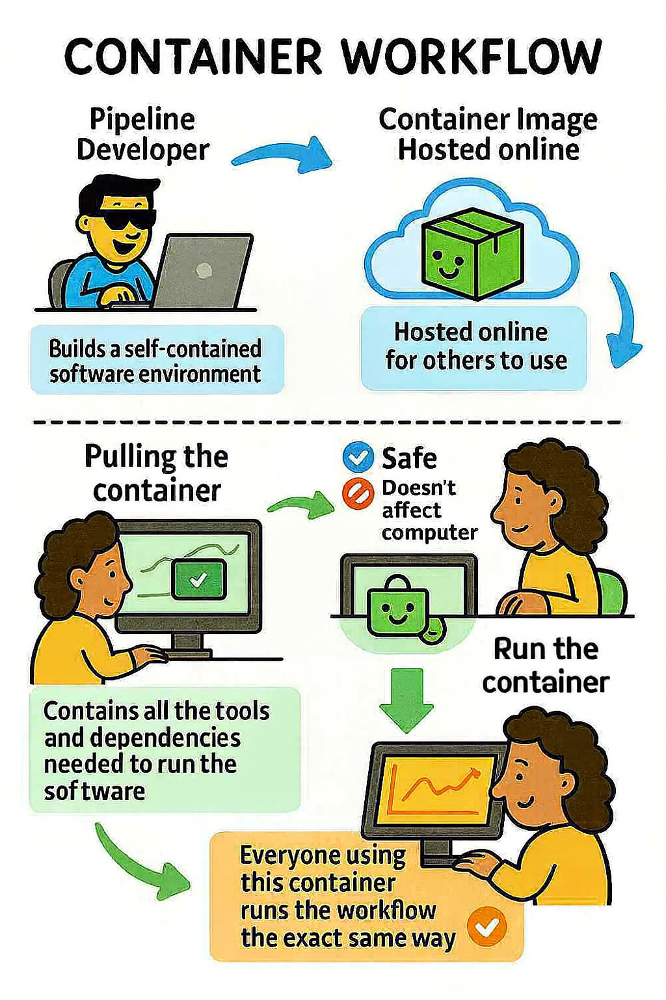

Installing and using containers with Nipoppy
Overview of containers
We will be using containerized pipelines for data processing. This means that they are self-contained software environments that package all the tools, dependencies, and code needed to run each step of a data analysis pipeline reproducibly and consistently across systems. To download and run containers, you need a container platform, either Apptainer/Singularity or Docker. We strongly suggest Apptainer/Singularity, which is fully supported by Nipoppy. Docker can be used if you have admin rights to the computer/server you are using, or you work on something other than a Linux system (like a Mac). Using Nipoppy with Docker is possible though will likely require additional help -- reach out to us on our Discord channel and we would be happy to chat!
 Image generated using Microsoft Copilot.
Checking for an existing installation
You may already have apptainer/singularity installed on your machine. You can try this by simply running apptainer or singularity in your command line and see if it throws an error. Sometimes you will need to load it to your environment, for example by running module load apptainer. If you don't have a container platform installed, you can find how to do this below.
Installing a container platform
Note: In some environments (e.g. shared servers), you may not be allowed to install software yourself. In that case, please contact your system administrators and request that they install Apptainer for you.
Building and pulling containers
Most containers used in scientific pipelines are built by developers and then hosted online (for example, on Docker Hub or other registries). What you actually download is a container image, which is a file that packages all the necessary software and dependencies.
For Apptainer, this image is stored as a single .sif file (Singularity Image Format). You do not need to build everything from scratch, instead, you can pull the image from the cloud and convert it into a .sif container with a single command.
This process is:
- Reproducible – everyone pulls the exact same software environment.
- Safe – the build command only creates the .sif file and does not change your system.
Example commands
For Apptainer, run:
apptainer build <pipeline>_<version>.sif \
docker://<repository>/<pipeline>:<version>
For docker, run:
docker pull <repository>/<pipeline>:<version>
Storing container images
Nipoppy encourages the use of a common directory for storing container images, which can be shared across datasets/individuals. This directory can be anywhere on a system.
Note: In the global config file, <NIPOPPY_DPATH_CONTAINERS> should be replaced by the actual path to that directory. We encourage you to create a symlink (= a shortcut pointing to another file or directory, allowing access from a different location without copying the original) from the <DATASET_ROOT>/containers directory inside the Nipoppy dataset to the shared container store location. This makes it easy for anyone inspecting the dataset to find the containers. If you create this symlink, you don’t need to set <NIPOPPY_DPATH_CONTAINERS> manually, because Nipoppy will automatically use <DATASET_ROOT>/containers by default.